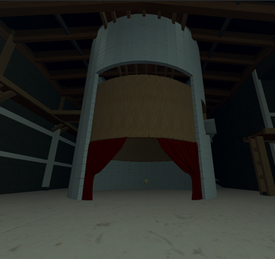
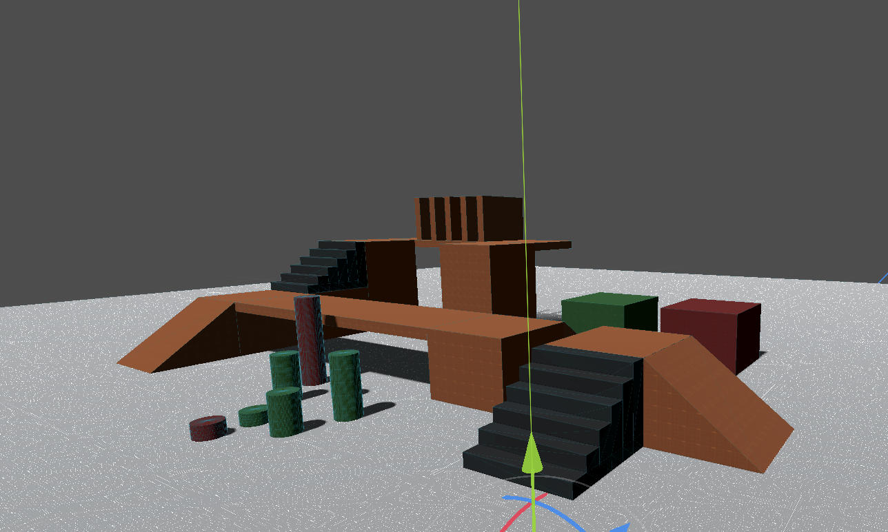
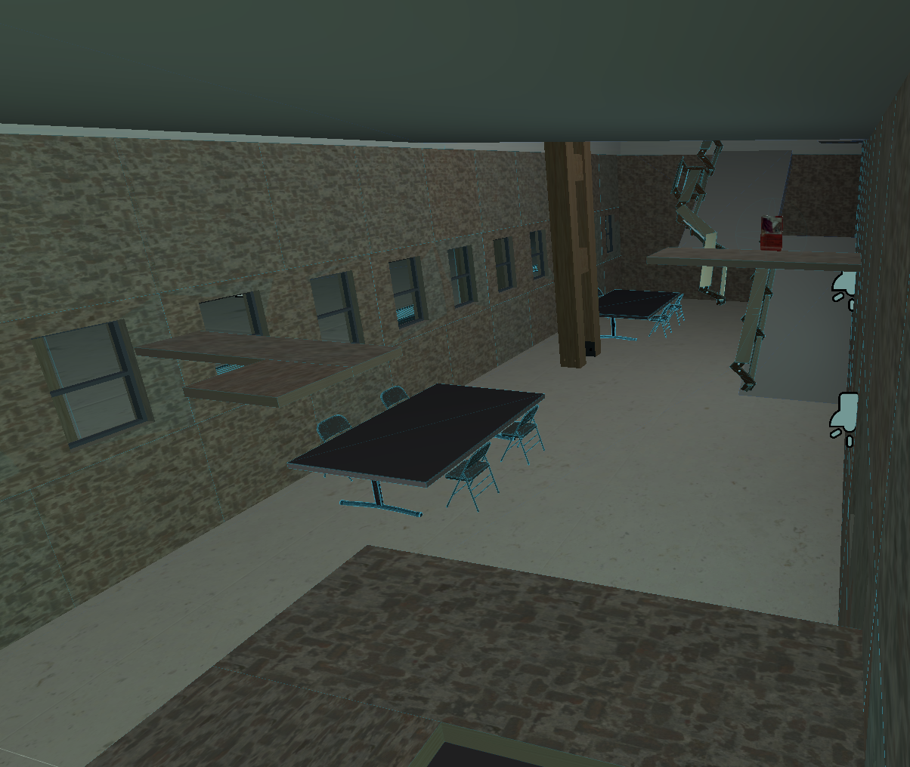

Enjmirage - 2026
Game Design - Level Design - Programming
Au cours de l'année 2026, j'ai réalisé une game jam de 3 jours sur le thème "A thing of beauty, I know, will never fade away".
Présentation
Jeu de parkour en 3D en première personne conçu sur Godot en équipe sur 3 jours.
Le jeu se déroule au sein de l'Enjmin 250 ans dans le futur et l'objectif est de collectionner les 15 cartes pokejmin des anciens étudiants réparties dans la carte.
Le joueur peut courir, s'accroupir (seulement visuellement), glisser s'il s'accroupit avec de l'élan et ledge climb (s'agripper et se relever s'il manque une plateforme de justesse).
Pour trouver les cartes, le joueur doit donc combiner efficacement ces mécaniques.

Contribution
Pour ce projet j'ai travaillé sur le game design en imaginant plusieurs mécaniques de jeu.
J'ai aussi travaillé sur le level design en réalisant plusieurs niveaux dans l'enjmin et le gym level qui permet de tester le player controller et d'avoir une idée des dimensions dans le jeu.
De plus, j'ai caché la moitié des cartes pokejmin à travers les niveaux en m'assurant qu'elles étaient atteignables tout en demandant une certaine maîtrise des mécaniques de jeu.
Enfin j'ai codé le ledge climb permettant de se relever sur une plateforme dans le cas où le joueur la manque de justesse.

